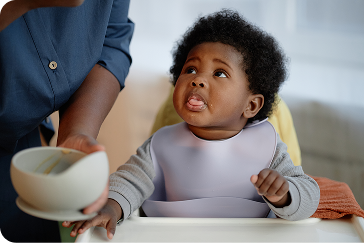

Mulheres que têm um ciclo menstrual regular, ou seja que sempre
tem a mesma
duração, conseguem calcular seu período menstrual
e saber quando a
próxima menstruação vai descer.

Alguns alimentos não são recomendados para os primeiros meses de introdução alimentar, devido ao risco de alergias ou dificuldade de digestão. Evite:...
A introdução alimentar é um marco importante na vida do bebé e na jornada da maternidade. Este momento envolve a transição do leite (seja materno ou fórmula) para alimentos sólidos, e é fundamental ..
Seja paciente...O bebé pode não aceitar a comida de imediato e isso é normal. A introdução de novos sabores e texturas pode levar algum tempo. Continue a oferecer os alimentos sem pressa e sem pressão. A paciência é fundamental.
Manter uma boa higiene íntima durante o período menstrual é fundamental para o conforto e a saúde da mulher. Os absorventes, sejam externos ou ...
Calcula a data
do nascimento
do teu bebé com facilidade
Vamos experimentar agora?